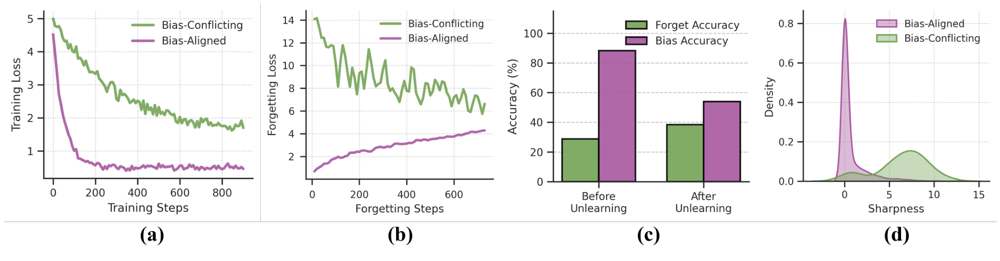
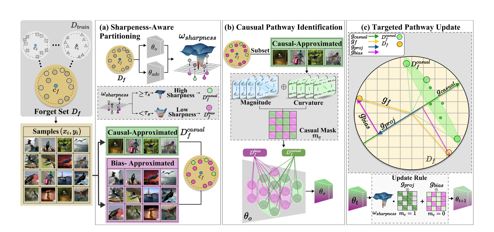
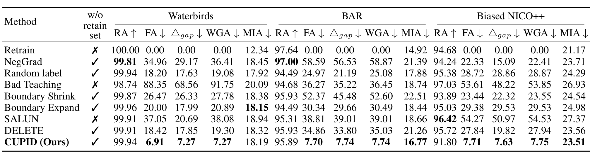
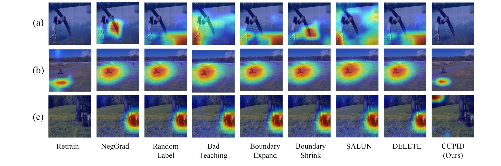

Abstract
Machine unlearning, which enables a model to forget specific data, is crucial for ensuring data privacy and model reliability. However, its effectiveness can be severely undermined in real-world scenarios where models learn unintended biases from spurious correlations within the data. This paper investigates the unique challenges of unlearning from such biased models. We identify a novel phenomenon we term “shortcut unlearning,” where models exhibit an “easy to learn, yet hard to forget” tendency. Specifically, models struggle to forget easily-learned, bias-aligned samples; instead of forgetting the class attribute, they unlearn the bias attribute, which can paradoxically improve accuracy on the class intended to be forgotten. To address this, we propose CUPID, a new unlearning framework inspired by the observation that samples with different biases exhibit distinct loss landscape sharpness. Our method first partitions the forget set into causal- and bias-approximated subsets based on sample sharpness, then disentangles model parameters into causal and bias pathways, and finally performs a targeted update by routing refined causal and bias gradients to their respective pathways. Extensive experiments on biased datasets including Waterbirds, BAR, and Biased NICO++ demonstrate that our method achieves state-of-the-art forgetting performance and effectively mitigates the shortcut unlearning problem.
Analysis on Shortcut Unlearning

(a) Rapid learning of bias-aligned samples. (b) Slow forgetting of bias-aligned samples. (c) Linear probing accuracy confirming shortcut removal. (d) Sharpness distributions distinguishing sample types.
A model trained on biased data learns bias-aligned samples first (a). When we apply a standard unlearning algorithm, these same samples are the hardest to forget, while the forgetting loss of bias-conflicting samples rises quickly (b): easy to learn, yet hard to forget. Worse, accuracy on bias-conflicting samples of the forget class paradoxically increases, and a linear probe shows that bias information drops sharply after unlearning (c). The model erases the shortcut rather than the class itself, a failure we term shortcut unlearning. The two sample types also occupy regions of clearly different loss sharpness (d), which gives us a handle to separate them.
CUPID

(a) Sharpness-Aware Partitioning. (b) Causal Pathway Identification. (c) Targeted Pathway Update.
CUPID (Causal Unlearning via Pathway Identification and Disentanglement) works in three stages. Sharpness-Aware Partitioning splits the forget set into causal- and bias-approximated subsets according to local loss sharpness. Causal Pathway Identification disentangles the model's parameters into a causal pathway and a bias pathway. Targeted Pathway Update then routes the refined causal and bias gradients to their respective pathways, so that unlearning removes the class information rather than only the shortcut.
Results

Unlearning from a heavily biased distribution (99.5:0.5 bias-aligned to bias-conflicting samples in the forget class).
On training sets where 99.5% of the forget class is bias-aligned, CUPID achieves the lowest forget accuracy on all three datasets (6.91% on Waterbirds, 7.70% on BAR and 7.71% on Biased NICO++), closely approaching retraining from scratch. Its minimal Δgap and lowest worst-group accuracy show that it forgets both shortcut-based and causal information evenly, without requiring access to the retain set.
Qualitative Results

Grad-CAM on (a) Waterbirds, (b) BAR and (c) Biased NICO++.
Grad-CAM shows that most existing methods still attend to the spurious features after unlearning, while CUPID diverts attention away from them.
BibTeX
@inproceedings{kwon2026easy,
title = {Easy to Learn, Yet Hard to Forget: Towards Robust Unlearning Under Bias},
author = {Kwon, JuneHyoung and Kim, MiHyeon and Lee, Eunju and Lee, Yoonji and Lee, Seunghoon and Kim, YoungBin},
booktitle = {Proceedings of the AAAI Conference on Artificial Intelligence},
year = {2026}
}